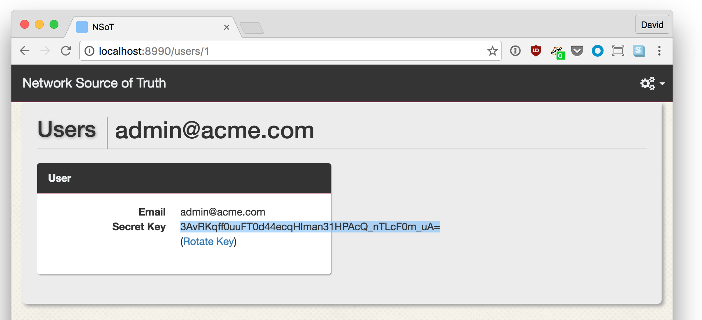

EOS - Retrieving facts
>>> import pyeapi
>>> import pprint
>>> pp = pprint.PrettyPrinter(indent=4)
>>>
>>> connection = pyeapi.client.connect(transport='https', host='127.0.0.1',
... username='vagrant', password='vagrant',
... port=12443,)
>>> eos = pyeapi.client.Node(connection)
>>> eos_facts = eos.run_commands(['show version'])
>>> pp.pprint(eos_facts)
[ { u'architecture': u'i386',
u'bootupTimestamp': 1475330139.05,
u'hardwareRevision': u'',
u'internalBuildId': u'e796e94c-ba3b-4355-afcf-ef0abfbfaee3',
u'internalVersion': u'4.16.6M-3205780.4166M',
u'isIntlVersion': False,
u'memFree': 53816,
u'memTotal': 1897596,
u'modelName': u'vEOS',
u'serialNumber': u'',
u'systemMacAddress': u'08:00:27:fc:27:59',
u'version': u'4.16.6M'}]
EOS - Changing the hostname
>>> import pyeapi
>>> connection = pyeapi.client.connect(transport='https', host='127.0.0.1',
... username='vagrant', password='vagrant',
... port=12443,)
>>> eos = pyeapi.client.Node(connection)
>>> print(eos.run_commands(['show hostname'])[0]['hostname'])
localhost
>>> eos.run_commands(['configure', 'hostname a-new-hostname'])
[{}, {}]
>>> print(eos.run_commands(['show hostname'])[0]['hostname'])
a-new-hostname
Objectives
Learn how to use napalm to abstract vendor's APIs. The code we will produce in this section will have the same functionality as in the previous section, however, it will work across different vendors.
NAPALM - Retrieving facts
>>> from napalm_base import get_network_driver
>>> import pprint
>>> pp = pprint.PrettyPrinter(indent=4)
>>>
>>> junos_driver = get_network_driver('junos')
>>> eos_driver = get_network_driver('eos')
>>>
>>> junos_configuration = {
... 'hostname': '127.0.0.1', 'username': 'vagrant',
... 'password': '', 'optional_args': {'port': 12203}}
>>>
>>> eos_configuration = {
... 'hostname': '127.0.0.1', 'username': 'vagrant',
... 'password': 'vagrant', 'optional_args': {'port': 12443}}
NAPALM - Retrieving facts (cont'd)
>>> with junos_driver(**junos_configuration) as junos:
... pp.pprint(junos.get_facts())
...
{ 'fqdn': u'new-hostname',
'hostname': u'new-hostname',
'interface_list': ['ge-0/0/0', ... 'vlan'],
'model': u'FIREFLY-PERIMETER',
'os_version': u'12.1X47-D20.7',
'serial_number': u'b9440f5cd069',
'uptime': 4920,
'vendor': u'Juniper'}
>>> with eos_driver(**eos_configuration) as eos:
... pp.pprint(eos.get_facts())
...
{ 'fqdn': u'a-new-hostname',
'hostname': u'a-new-hostname',
'interface_list': [u'Ethernet1', u'Ethernet2', u'Management1'],
'model': u'vEOS',
'os_version': u'4.16.6M-3205780.4166M',
'serial_number': u'',
'uptime': 5153,
'vendor': u'Arista'}
NAPALM - Changing the hostname
>>> from napalm_base import get_network_driver
>>> junos_driver = get_network_driver('junos')
>>> eos_driver = get_network_driver('eos')
>>>
>>> junos_configuration = {
... 'hostname': '127.0.0.1', 'username': 'vagrant',
... 'password': '', 'optional_args': {'port': 12203}}
>>>
>>> eos_configuration = {
... 'hostname': '127.0.0.1', 'username': 'vagrant',
... 'password': 'vagrant', 'optional_args': {'port': 12443}}
>>> def change_configuration(device, configuration):
... device.load_merge_candidate(config=configuration)
... print(device.compare_config())
... device.commit_config()
...
>>>
NAPALM - Changing the hostname (cont'd)
>>> with junos_driver(**junos_configuration) as junos:
... change_configuration(junos, "system {host-name yet-another-hostname;}")
...
[edit system]
- host-name new-hostname;
+ host-name yet-another-hostname;
>>>
>>> with eos_driver(**eos_configuration) as eos:
... change_configuration(eos, 'hostname yet-another-hostname')
...
@@ -8,7 +8,7 @@
!
transceiver qsfp default-mode 4x10G
!
-hostname a-new-hostname
+hostname yet-another-hostname
!
spanning-tree mode mstp
!
>>>
NAPALM - Changing the hostname (cont'd)
>>> with junos_driver(**junos_configuration) as junos:
... change_configuration(junos, "system {host-name yet-another-hostname;}")
...
>>>
>>> with eos_driver(**eos_configuration) as eos:
... change_configuration(eos, 'hostname yet-another-hostname')
...
>>>
Changes are idempotent
Summary
- NAPALM allows you to write code that works across vendors, workflows and data retrieval are unified
- Configuration syntax is still vendor dependent (YANG support is under progress)
- Configuration changes are idempotent
Objectives
Learn how to use ansible and jinja2 templates to abstract configuration syntax and focus on the parameters to change
Ansible - Getting information - Playbook
---
- name: Get facts
hosts: all
connection: local
gather_facts: no
vars:
tasks:
- name: get facts from device
napalm_get_facts:
hostname: "{{ host }}"
username: "{{ user }}"
dev_os: "{{ os }}"
password: "{{ password }}"
optional_args:
port: "{{ port }}"
filter: ['facts']
register: napalm_facts
- name: Facts
debug:
msg: "{{ napalm_facts.ansible_facts.facts|to_nice_json }}"
tags: [print_action]
Ansible - Getting information - Run
➜ ansible-playbook playbook_facts.yml
..
# Facts *******************************************************************************************************************
* rtr00 - changed=False ----------------------------------------------------
{
"fqdn": "yet-another-hostname",
"hostname": "yet-another-hostname",
"interface_list": [
"Ethernet1",
"Ethernet2",
"Management1"
],
"model": "vEOS",
"os_version": "4.16.6M-3205780.4166M",
"serial_number": "",
"uptime": 14746,
"vendor": "Arista"
}
* rtr01 - changed=False ----------------------------------------------------
{
"fqdn": "yet-another-hostname",
"hostname": "yet-another-hostname",
"interface_list": [
"ge-0/0/0",
...
"vlan"
],
"model": "FIREFLY-PERIMETER",
"os_version": "12.1X47-D20.7",
"serial_number": "b9440f5cd069",
"uptime": 14520,
"vendor": "Juniper"
}
# STATS *******************************************************************************************************************
rtr00 : ok=2 changed=0 failed=0 unreachable=0
rtr01 : ok=2 changed=0 failed=0 unreachable=0
Ansible - Changing configuration - data
➜ cat hosts
[all]
rtr00 os=eos host=127.0.0.1 user=vagrant password=vagrant port=12443
rtr01 os=junos host=127.0.0.1 user=vagrant password="" port=12203
➜ cat group_vars/all.yml
---
ansible_python_interpreter: "/usr/bin/env python"
domain: acme.com
➜ cat host_vars/rtr00.yml
---
hostname: thehostnama
➜ cat host_vars/rtr01.yml
---
hostname: another-host
Ansible - Changing configuration - Templates
➜ cat templates/eos/simple.j2
hostname {{ hostname }}
ip domain-name {{ domain }}
➜ cat templates/junos/simple.j2
system {
host-name {{ hostname}};
domain-name {{ domain }};
}
Ansible - Changing configuration - Playbook
---
tasks:
- name: A simple template with some configuration
template:
src: "{{ os }}/simple.j2"
dest: "{{ host_dir }}/simple.conf"
changed_when: False
when: commit_changes == 0
- name: Load configuration into the device
napalm_install_config:
hostname: "{{ host }}"
username: "{{ user }}"
dev_os: "{{ os }}"
password: "{{ password }}"
optional_args:
port: "{{ port }}"
config_file: "{{ host_dir }}/simple.conf"
commit_changes: "{{ commit_changes }}"
replace_config: false
get_diffs: True
diff_file: "{{ host_dir }}/diff"
tags: [print_action]
Ansible - Changing configuration - Dry-run
➜ ansible-playbook playbook_configure.yml
......
# Load configuration into the device **************************************************************************************
* rtr00 - changed=True -----------------------------------------------------
@@ -8,7 +8,8 @@
!
transceiver qsfp default-mode 4x10G
!
-hostname yet-another-hostname
+hostname thehostnama
+ip domain-name acme.com
!
spanning-tree mode mstp
!
* rtr01 - changed=True -----------------------------------------------------
[edit system]
- host-name yet-another-hostname;
+ host-name another-host;
+ domain-name acme.com;
# STATS *******************************************************************************************************************
rtr00 : ok=4 changed=1 failed=0 unreachable=0
rtr01 : ok=4 changed=1 failed=0 unreachable=0
Ansible - Changing configuration - Commit
➜ ansible-playbook playbook_configure.yml -e commit_changes=1
# Load configuration into the device **************************************************************************************
* rtr00 - changed=True -----------------------------------------------------
@@ -8,7 +8,8 @@
!
transceiver qsfp default-mode 4x10G
!
-hostname yet-another-hostname
+hostname thehostnama
+ip domain-name acme.com
!
spanning-tree mode mstp
!
* rtr01 - changed=True -----------------------------------------------------
[edit system]
- host-name yet-another-hostname;
+ host-name another-host;
+ domain-name acme.com;
# STATS *******************************************************************************************************************
rtr00 : ok=1 changed=1 failed=0 unreachable=0
rtr01 : ok=1 changed=1 failed=0 unreachable=0
Ansible - Changing configuration - Idempotence
➜ ansible-playbook playbook_configure.yml -e commit_changes=1
# Load configuration into the device **************************************************************************************
* rtr00 - changed=False -- ------------------------------------------------
* rtr01 - changed=False -- ------------------------------------------------
# STATS *******************************************************************************************************************
rtr00 : ok=1 changed=0 failed=0 unreachable=0
rtr01 : ok=1 changed=0 failed=0 unreachable=0
Summary
- We used ansible as our framework to build our configuration management system
- We stored variables in
YAML
- We used
jinja2 templates to translate variables into device configuration
- We leveraged on
NAPALM to seamlessly deploy the resulting configuration and to gather information
Objectives
We are going to leverage on what we have learnt so far to build an IP fabric using vendor-agnostic data to drive the configuration.
D-D - Changing configuration - data
---
hostname: rtr00
asn: 65000
router_id: "1.1.1.100"
interfaces:
- name: "lo0"
ip_address: "2001:db8:b33f::100/128"
- name: "et1"
ip_address: "2001:db8:caf3:1::/127"
- name: "et2"
ip_address: "2001:db8:caf3:2::/127"
peers:
- ip: "2001:db8:caf3:1::1"
asn: 65001
- ip: "2001:db8:caf3:2::1"
asn: 65001
---
hostname: rtr01
asn: 65001
router_id: "1.1.1.101"
interfaces:
- name: "lo0"
ip_address: "2001:db8:b33f::101/128"
- name: "ge-0/0/1"
ip_address: "2001:db8:caf3:1::1/127"
- name: "ge-0/0/2"
ip_address: "2001:db8:caf3:2::1/127"
peers:
- ip: "2001:db8:caf3:1::"
asn: 65000
- ip: "2001:db8:caf3:2::"
asn: 65000
[all]
rtr00 os=eos host=127.0.0.1 user=vagrant password=vagrant port=12443
rtr01 os=junos host=127.0.0.1 user=vagrant password="" port=12203
D-D Changing configuration - Templates
➜ cat (...)/templates/eos/ipfabric.j2
ipv6 unicast-routing
{% for interface in interfaces %}
default interface {{ interface.name }}
interface {{ interface.name }}
{{ 'no switchport' if not interface.name.startswith("lo") else "" }}
ipv6 address {{ interface.ip_address }}
{% endfor %}
route-map EXPORT-LO0 permit 10
match interface Loopback0
no router bgp
router bgp {{ asn }}
router-id {{ router_id }}
redistribute connected route-map EXPORT-LO0
{% for peer in peers %}
neighbor {{ peer.ip }} remote-as {{ peer.asn }}
address-family ipv6
neighbor {{ peer.ip }} activate
{% endfor %}
➜ cat (...)/templates/junos/ipfabric.j2
{% for interface in interfaces %}
interfaces {
replace:
{{ interface.name }} {
unit 0 {
family inet6 {
address {{ interface.ip_address }};
}
}
}
}
{% endfor %}
routing-options {
router-id {{ router_id }};
autonomous-system {{ asn }};
}
policy-options {
policy-statement EXPORT_LO0 {
from interface lo0.0;
then accept;
}
policy-statement PERMIT_ALL {
from protocol bgp;
then accept;
}
}
protocols {
replace:
bgp {
import PERMIT_ALL;
export [ EXPORT_LO0 PERMIT_ALL ];
}
}
{% for peer in peers %}
protocols {
bgp {
group peers {
neighbor {{ peer.ip }} {
peer-as {{ peer.asn }};
}
}
}
}
{% endfor %}
D-D Changing configuration - Playbook
...
- name: Basic Configuration
hosts: all
connection: local
roles:
- base
- name: Fabric Configuration
hosts: all
connection: local
roles:
- ipfabric
...
➜ tree roles
├── base
│ ├── tasks
│ │ └── main.yml
│ └── templates
│ ├── eos
│ │ └── simple.j2
│ └── junos
│ └── simple.j2
└── ipfabric
├── tasks
│ └── main.yml
└── templates
├── eos
│ └── ipfabric.j2
└── junos
└── ipfabric.j2
D-D Changing configuration - Run (1)

D-D Changing configuration - Run (2)

D-D Changing configuration - Run (3)

D-D Changing configuration - Run (4)

D-D Verifying BGP state - Playbook
- name: "get facts from device"
napalm_get_facts:
hostname: "{{ host }}"
username: "{{ user }}"
dev_os: "{{ os }}"
password: "{{ password }}"
optional_args:
port: "{{ port }}"
filter: ['bgp_neighbors']
register: napalm_facts
- name: "Check BGP sessions are healthy"
assert:
that:
- item.value.is_up
msg: "{{ item.key }} is down"
with_dict: "{{ napalm_facts.ansible_facts.bgp_neighbors.global.peers }}"
- name: "Check BGP sessions are receiving prefixes"
assert:
that:
- item.value.address_family.ipv6.received_prefixes > 0
msg: "{{ item.key }} is not receiving any prefixes"
with_dict: "{{ napalm_facts.ansible_facts.bgp_neighbors.global.peers }}"
D-D Verifying BGP state - Run (1)

D-D Verifying BGP state - Run (2)
 Maybe a faulty policy or missing communities?
Maybe a faulty policy or missing communities?
D-D Verifying BGP state - Run (3)
 Most probably a faulty link
Most probably a faulty link
D-D Verifying BGP state - Run (4)
 Looks fine but it is not, there is a link with no BGP session configured
Looks fine but it is not, there is a link with no BGP session configured
Summary
- We leveraged on that we learnt so far to build something more complex
- Storing data in static files makes them hard to manipulate
- We verified state of the network using the network as source of truth rather than using our knowledge about the network
Objectives
Similar to the previous scenario, however, this time we will use a backend to store and manipulate the data.
DDB - Before we begin - Start VM with nsot

DDB - Before we begin - Start nsot

DDB - Before we begin - Gather nsot token

DDB - Before we begin - Configure nsot client
Edit ~/.pynsotrc and add the following content:
[pynsot]
url = http://localhost:8990/api
secret_key = 3AvRKqff0uuFT0d44ecqHIman31HPAcQ_nTLcF0m_uA= # Token
auth_method = auth_token
email = admin@acme.com
Make sure you replace the secret_key with the token you gathered in the previous step.
DDB - Before we begin - Create the data

DDB - Before we begin - Verify the data (1)

DDB - Before we begin - Verify the data (2)

DDB - backend integration - Dyn. inventory

DDB - backend integration - Smarter data


DDB - Configuration - Run (1)

DDB - Configuration - Run (2)

DDB - Configuration - Run (3)

DDB - Verifying - Playbook (1)
- name: "Get facts from device"
napalm_get_facts:
hostname: "{{ host }}"
username: "{{ user }}"
dev_os: "{{ os }}"
password: "{{ password }}"
optional_args:
port: "{{ port }}"
filter: ['bgp_neighbors']
register: napalm_facts
DDB - Verifying - Playbook (2)
- name: "Check all BGP sessions are configured"
assert:
that:
- hostvars[item.value.attributes.connects_to_device]['interfaces'][item.value.attributes.connects_to_iface]['ipv6'][0].split('/')[0] in napalm_facts.ansible_facts.bgp_neighbors.global.peers
msg: "{{ '{}:{}'.format(item.value.attributes.connects_to_iface, item.value.attributes.connects_to_device) }} ({{ hostvars[item.value.attributes.connects_to_device]['interfaces'][item.value.attributes.connects_to_iface]['ipv6'][0].split('/')[0] }}) is missing"
with_dict: "{{ interfaces }}"
when: "{{ item.value.attributes.link_type == 'fabric' }}"
tags: [print_action]
Let's take a look:
hostvars[item.value.attributes.connects_to_device]['interfaces'][item.value.attributes.connects_to_iface]['ipv6'][0].split('/')[0] in napalm_facts.ansible_facts.bgp_neighbors.global.peers
item.value # interface
interface.attributes.connects_to_device # peer
interface.attributes.connects_to_iface # peer_iface
napalm_facts.ansible_facts.bgp_neighbors.global.peers # my_configured_peers
hostvars[peer]['interfaces'][peer_iface]['ipv6'] in my_configured_peers
DDB - Verifying - Playbook (3)
- name: "Check BGP sessions are healthy"
assert:
that:
- napalm_facts.ansible_facts.bgp_neighbors.global.peers[hostvars[item.value.attributes.connects_to_device]['interfaces'][item.value.attributes.connects_to_iface]['ipv6'][0].split('/')[0]].is_up
msg: "{{ '{}:{}'.format(item.value.attributes.connects_to_iface, item.value.attributes.connects_to_device) }} ({{ hostvars[item.value.attributes.connects_to_device]['interfaces'][item.value.attributes.connects_to_iface]['ipv6'][0].split('/')[0] }}) is configured but down"
with_dict: "{{ interfaces }}"
when: "{{ item.value.attributes.link_type == 'fabric' }}"
tags: [print_action]
- name: "Chack BGP sessions are receiving prefixes"
assert:
that:
- napalm_facts.ansible_facts.bgp_neighbors.global.peers[hostvars[item.value.attributes.connects_to_device]['interfaces'][item.value.attributes.connects_to_iface]['ipv6'][0].split('/')[0]].address_family.ipv6.received_prefixes > 0
msg: "{{ '{}:{}'.format(item.value.attributes.connects_to_iface, item.value.attributes.connects_to_device) }} ({{ hostvars[item.value.attributes.connects_to_device]['interfaces'][item.value.attributes.connects_to_iface]['ipv6'][0].split('/')[0] }}) is not receiving any prefixes"
with_dict: "{{ interfaces }}"
when: "{{ item.value.attributes.link_type == 'fabric' }}"
tags: [print_action]
DDB - Verifying - Run (1)
 We verify links, not BGP sessions
We verify links, not BGP sessions
DDB - Verifying - Run (2)
 We can correlate BGP sessions with interfaces easily. That might allows us to infer the reason behind the errors. For example, in the picture above it's easy to identify that the reason why
We can correlate BGP sessions with interfaces easily. That might allows us to infer the reason behind the errors. For example, in the picture above it's easy to identify that the reason why 2001:db8:caf3:: is down in rtr01 it's because 2001:db8:caf3::1 is not configured in rtr00.
Summary
- We replaced all those
YAML files with a backend (nsot)
- We added richer data to
nsot that we previously had
- We leveraged on the richer data to build the configurations with less information (BGP peers were inferred)
- We leveraged on the richer data to help diagnose problems